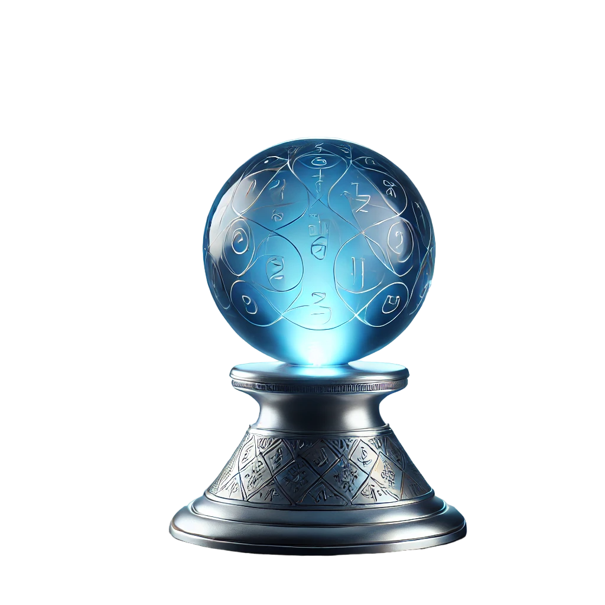
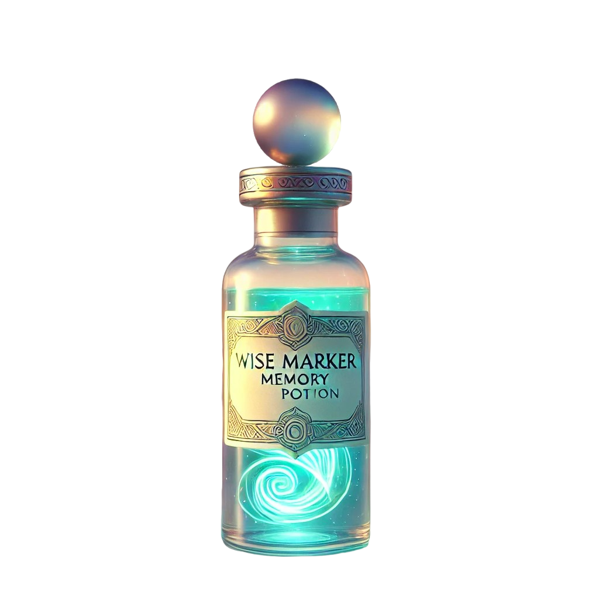
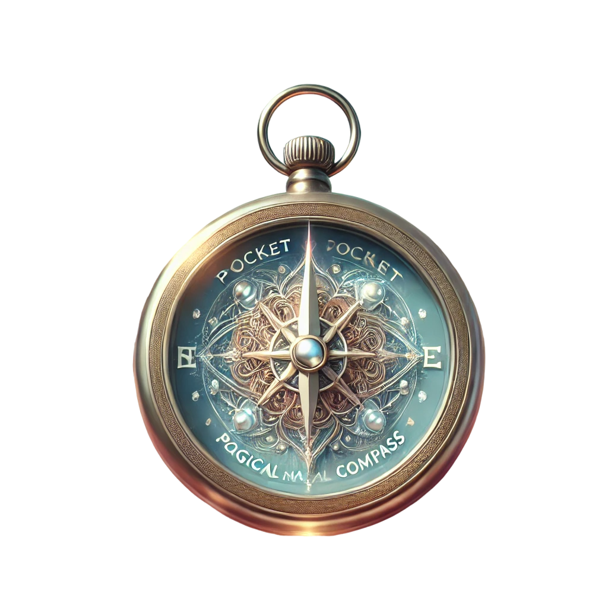
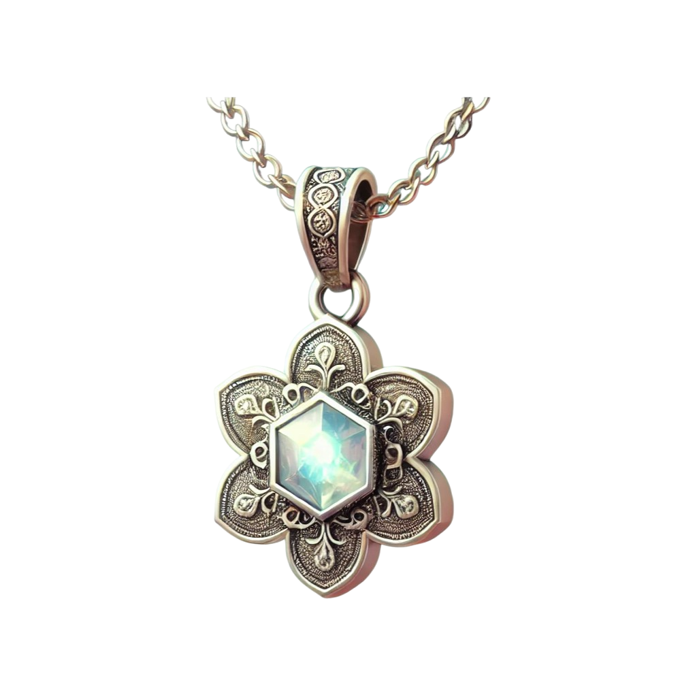
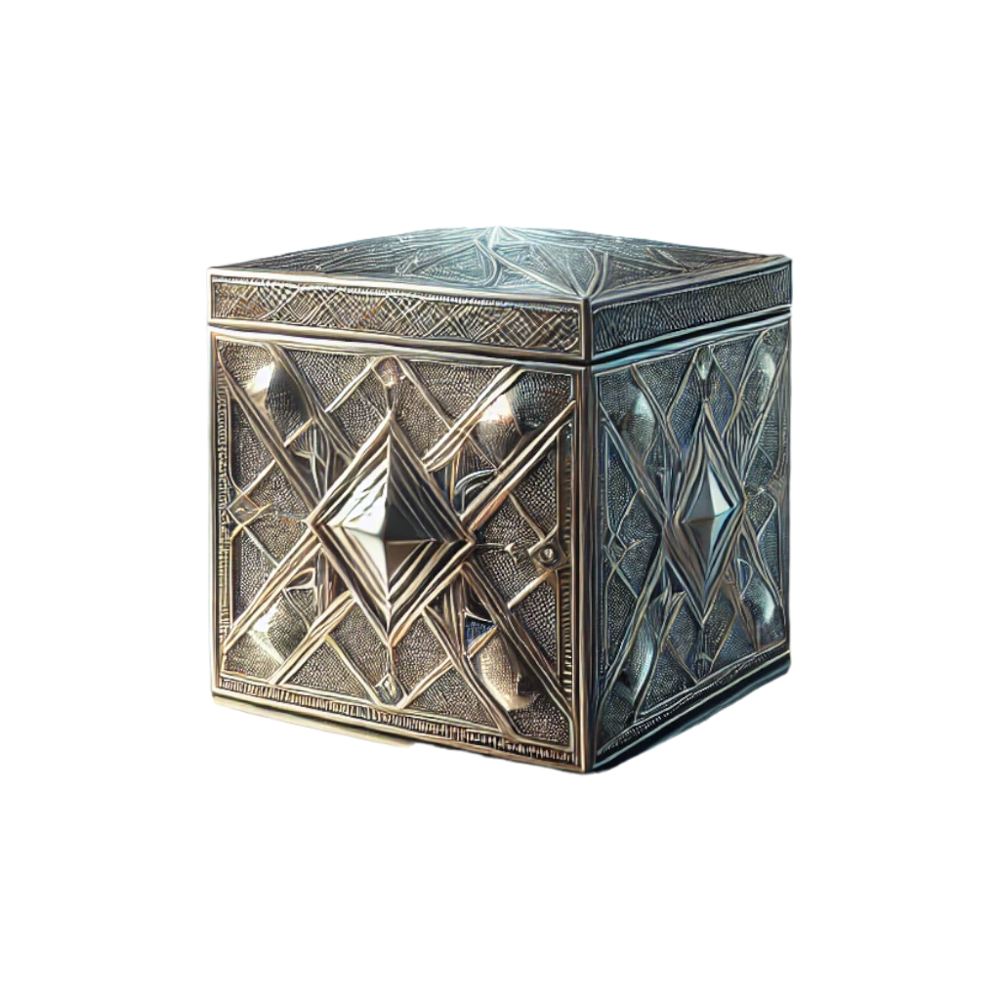
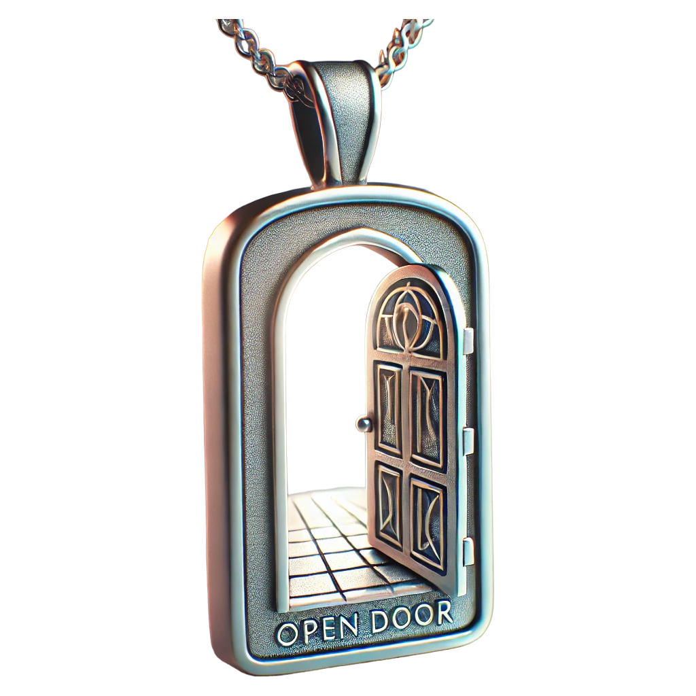

Find the relics you need hear
Catalog of the Ministry of Magic
Learn More
About Us
Welcome to the Magical Relics Online Store of the Ministry of Magic! We are a team of passionate enthusiasts dedicated to sharing the enchanting world of magic with everyone, whether you are a wizard or a Muggle.
Our mission is to make magic accessible to all. We believe that even in everyday life, one can find a touch of enchantment. Our store offers unique, magic-inspired items that add a special touch to your space and bring joy to your life.

"Wise Marker" Memory Potion
a small vial filled with a shimmering liquid designed to enhance memory and learning capabilities. When consumed, it aids users in recalling important information and absorbing new material with greater ease for a limited duration. This potion is especially favored by students preparing for exams, as it provides a temporary boost in cognitive function, allowing them to study more effectively and retain crucial knowledge
Buy

Pocket Magical Compass
a small, enchanted tool that unfailingly points toward the nearest magical object or creature. Highly valued by novice wizards, it provides guidance in mysterious or unfamiliar areas. Compact and practical, this compass is an essential aid for anyone venturing into the unknown
Buy

Lucky Charm Pendant
a delightful amulet known for its ability to bring good fortune in minor tasks. When activated, it can enhance the wearer's chances of success, whether it's winning at card games or locating a much-needed book in a library. However, its effects are temporary, lasting only a few minutes, which means it should be used judiciously to maximize its benefits in crucial moments
Buy

Thought Exchange Box
a charming, small container designed for wizards and magical beings to leave messages or thoughts temporarily. When someone places their idea inside and closes the lid, the box holds onto it until the recipient opens it, allowing for secure and private communication across distances. This magical item is particularly favored for sending short messages or mysterious notes, making it an essential tool for keeping secrets and sharing whispers among friends and family in the wizarding world
Buy

Open Door Pendant
The Open Door Pendant appears to be an ordinary piece of jewelry, but its true power reveals itself when lightly pressed. When activated, it emits a subtle glow that guides the wearer towards the nearest exit from any maze or complex environment, making it an invaluable tool for navigation. However, it comes with a humorous warning: “Caution, do not use to escape classes!” suggesting that it should not be relied upon for evading responsibilities
Buy
